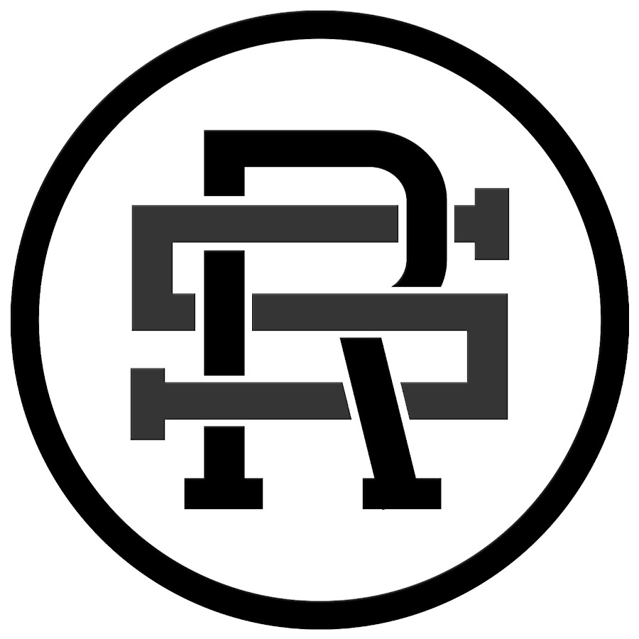

Freestyle Football is my passion

Jest to sztuka wykonywania ewolucji żonglersko-cyrkowych (piłką). Dyscyplina sportu, która liczy kilkanaście lat. Freestyle football wywodzi się z piłki nożnej i powstał na skutek udoskonalania i wymyślania nowych sztuczek piłkarskich. We freestyle footballu odbywają się mistrzostwa (świata, Europy itp.) oraz zjazdy, lecz największą oglądalnością cieszą się pokazy. Freestyle football jest młodą dyscypliną sportu. W początkowej fazie tego sportu najważniejszy był styl air. Z czasem coraz większy nacisk kładziony był na inne style (upper, sd). Obecnie dobry freestyler radzić sobie dobrze we wszystkich stylach. Coraz popularniejsze jest łączenie freestyle footballu z tańcem czy akrobatyką. Sport ten daje dużo możliwości, więc pojawia się coraz więcej zawodników prezentujących własne triki oraz własny styl gry. Mimo tego, że jest to młoda dyscyplina sportu, freestyle football rozwija się w szybkim tempie. Obserwując mistrzostwa świata z roku na rok widać wyraźny wzrost poziomu gry.
We freestyle footballu wyróżniamy 4 główne style:
Polacy we freestyle footballu należą do ścisłej światowej czołówki. Nasi zawodnicy od wielu lat zdobywają tytuły na zawodach rangi Mistrzostw Europy i Świata. Do najbardziej utytułowanych graczy należą:
Na arenie międzynarodowej rozgrywają się turnieje freestyle footballu. Uczestniczą w nich najlepsi freestylerzy z całego świata. Największymi jak dotąd imprezami tego typu były Masters of The Game (MOTG) rozgrywane w grudniu 2006 roku w Amsterdamie, gdzie zwycięzcą został Anglik John Farnworth oraz Red Bull Street Style, którego eliminacje odbywały się w każdym kraju, a później finał odbył się w São Paulo (Brazylia). W zawodach tych zwyciężył francuski freestyler Arnaud "Séan" Garnier, przyjmując tytuł mistrza świata Street Style Soccer, który później w 2010. stracił na rzecz reprezentanta Norwegii Andersa Solum w światowym turnieju Red Bull Stret Style w Kapsztadzie. W 2012 w Lecce we Włoszech odbył się finał trzeciej edycji tych międzynarodowych zawodów, który wygrał Tokuda Tokaro. W 2013 tytuł mistrza Red Bull Street Style przejął polski freestyler Szymon Skalski.

RedBull Street Style Valencia 2021

RedBull Street Style Miami 2019
Prezes PFFA (Polish Freestyle Football Association
Polish Freestyle Football Instagram